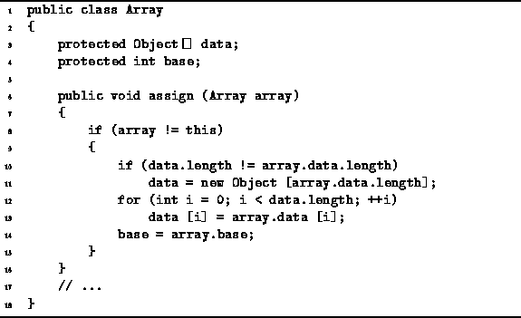

Data Structures and Algorithms
with Object-Oriented Design Patterns in Java
Data Structures and Algorithms
with Object-Oriented Design Patterns in Java
Program  defines the assign method of the Array class.
This method provides a way to assign the elements of one array to another.
The assign method is intended to be used like this:
defines the assign method of the Array class.
This method provides a way to assign the elements of one array to another.
The assign method is intended to be used like this:
Array a = new Array (5); Array b = new Array (5); // ... b.assign (a);The effect of doing this is to assign the elements of array a to the elements of array b. Note that after the assignment, a and b still refer to distinct Array instances.
Program shows a simple implementation of the assign method.
To determine its running time,
we need to consider carefully the execution of this method.

Program: Array class assign method.
First, we observe that the assign method detects and avoids self-assignment. That is, the special case
a.assign (a);is handled properly by doing nothing.
If the array sizes differ, a new array of Objects is allocated. As discussed above, this operation takes O(n) in the worst case, where n is the new array length.
Next, there is a loop which copies one-by-one the elements of the input array to the newly allocated array. Clearly this operation takes O(n) time to perform. Finally, the base field is copied in O(1) time. Altogether, the running time of the assign method is T(n)=O(n), where n is the size of the array being copied.
 Copyright © 1998 by Bruno R. Preiss, P.Eng. All rights reserved.
Copyright © 1998 by Bruno R. Preiss, P.Eng. All rights reserved.